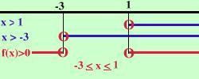

|
x2 + 2x - 3 Considero l'equazione associata x2 + 2x - 3 = 0 Risolvo x1 = -3 x2 = 1 Quindi la disequazione e' equivalente a (x-1) (x+3) Devo risolvere le due disequazioni (x-1) (x+3) e considerare dove i segni sono discordi perche' devo trovare i valori dove tutta l'espressione e' negativa, inoltre devo anche vedere dove l'espressione si annulla Risolvo la prima: x - 1 Risolvo la seconda x + 3 faccio lo schema x x f(x) + + + + (-3) - - - - - - (1) + + + + + + + + + f(x) indica l'espressione di partenza La parentesi tonda indica che l'espressione si annulla nel punto Io devo cercare dove l'espressione e' negativa o nulla e questo succede per -3 oppure in altra notazione  |